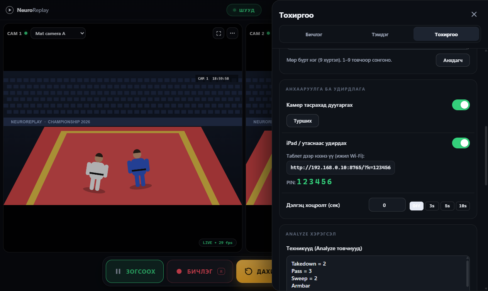
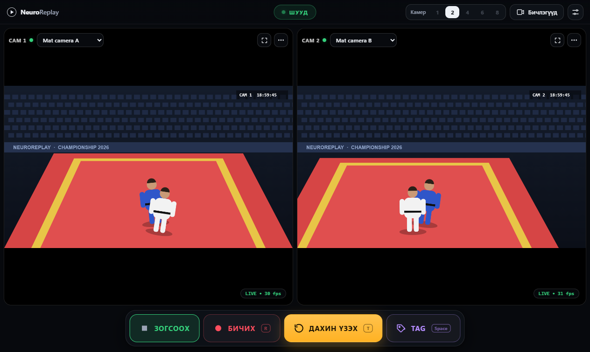
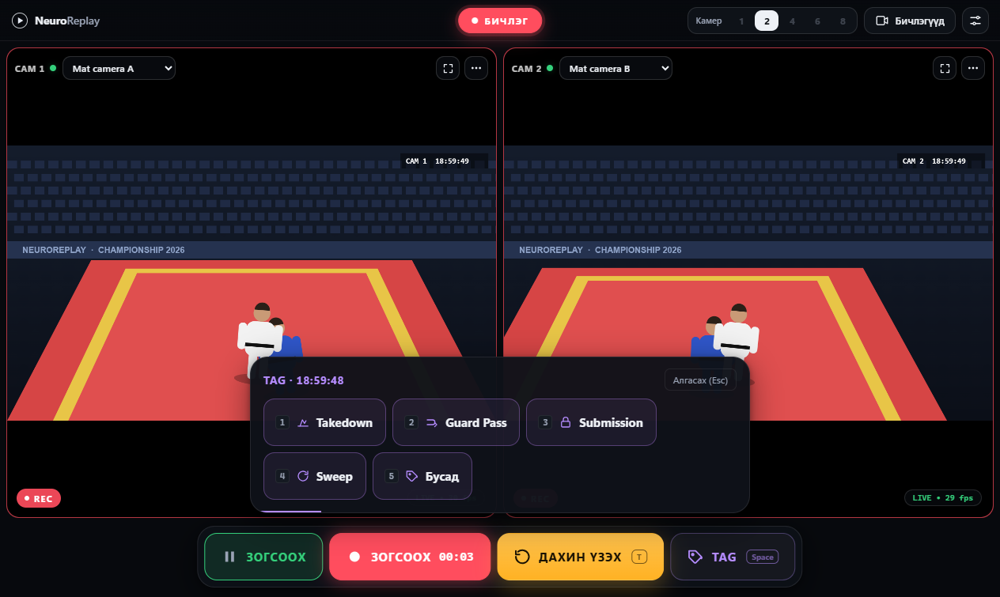
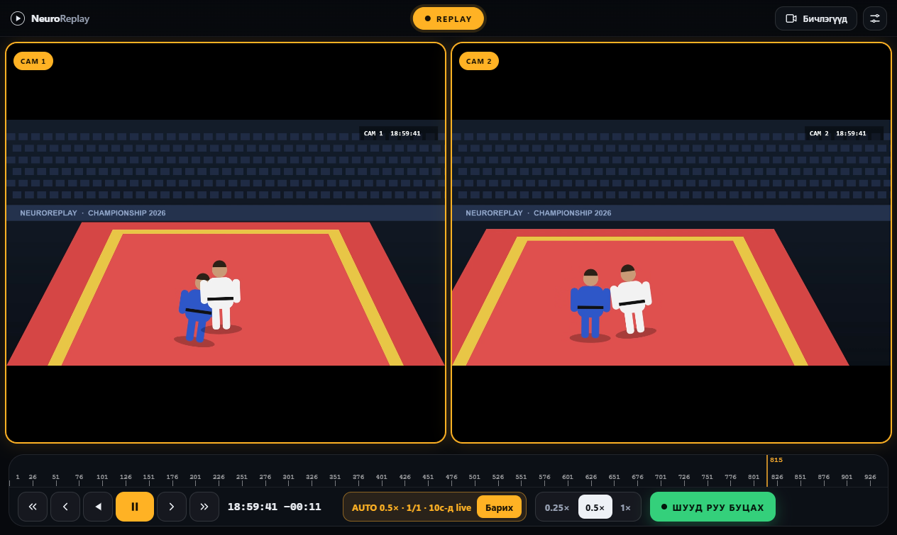
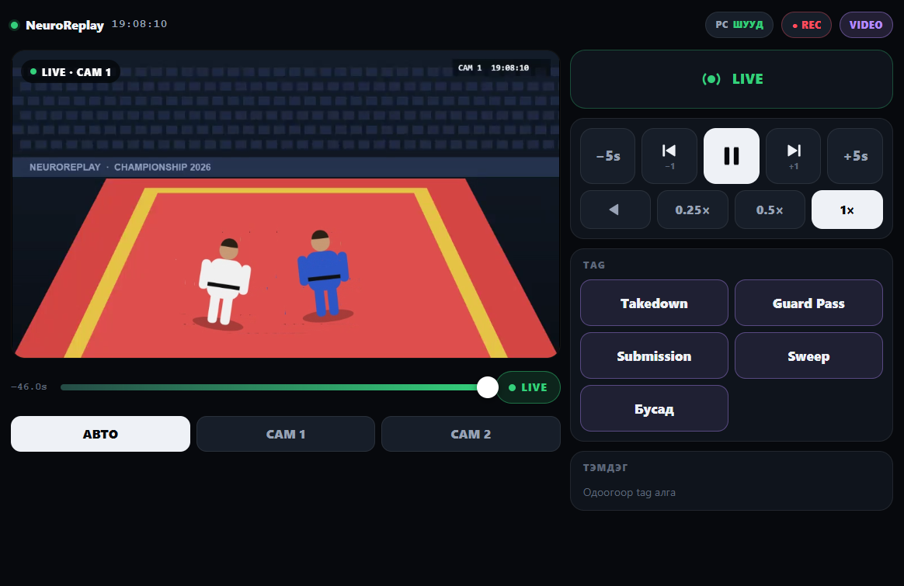
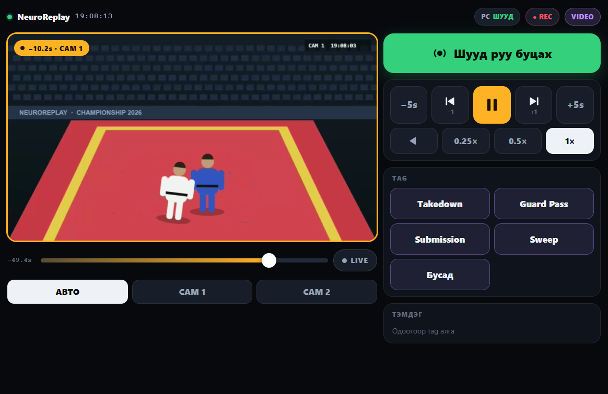

Тэмцээний үеийн товч зааварCompetition quick guide
Оператор болон ерөнхий шүүгчид зориулсан: бичлэг, replay, TAG ба iPad. Analyze-ийн хэрэгсэл тэмцээний үед хэрэггүй тул энд ороогүй — бүрэн гарын авлагыг эндээс үзнэ.
For the operators and the head referee: recording, replay, TAG and the iPad. The Analyze tools are not needed during a competition and are left out — see the full guide for them.
01Тэмцээний өмнөх өдөрThe day before
Бүх зүйлийг тэмцээний өмнө нэг удаа бүрэн туршина. Тэмцээний үед тохиргоо өөрчлөхгүй байх нь хамгийн найдвартай.
Run everything once, end to end, before the event. The safest competition is one where no setting changes on the day.
- Camera-нуудаа дэвжээ тус бүрийн байрлалд суулгаж, USB/сүлжээний кабелийг бэхэлнэ.
- NeuroReplay-г нээж, camera бүр LIVE болон зөв fps (25–30) харуулж байгааг шалгана.
- Тохиргоо: Дэлгэц хоцролт-ыг (жишээ нь 5 сек), Replay буцах (сек), TAG ангиллуудаа тохируулна.
- Бичлэгийн хавтсанд хангалттай зай байгааг шалгана (нэг camera-д цагт ойролцоогоор 2–4 GB).
- Ерөнхий шүүгчийн iPad-ыг холбож, live ба replay ажиллаж байгааг туршина (04-р хэсгийг үз).
- Хоёр PIN бий: удирдах PIN-ээр орсон iPad REC эхлүүлж зогсоож, TAG тавьж чадна; зөвхөн үзэх PIN-ээр орсон iPad зөвхөн live ба replay үзнэ. iPad бүр өөрийн replay-тэй — нэг нь ухраахад нөгөөд нөлөөлөхгүй.
- Нэг богино туршилтын бичлэг хийж, REPLAY ба TAG-ыг шалгана.
- Mount the cameras at each mat and secure the USB / network cables.
- Open NeuroReplay and check that every camera shows LIVE and a steady fps (25–30).
- In Settings, set the Display delay (for example 5 s), how many seconds Replay goes back, and your TAG categories.
- Make sure the recordings folder has room (roughly 2–4 GB per camera per hour).
- Connect the head referee’s iPad and test live and replay on it (see section 04).
- There are two PINs: an iPad signed in with the control PIN can also start / stop recording and add tags; one signed in with the view-only PIN only watches live and replay. Every iPad has its own replay — one going back never moves another.
- Make one short test recording and try REPLAY and TAG.

02Хэн юу хийх вэWho does what
| ХүнPerson | ҮүрэгJob |
|---|---|
| Оператор (дэвжээний дэргэд)Operator (at the mat) | Бичлэг эхлүүлж зогсооно, онцлох агшинд TAG дарна, шүүгч хүсэхэд компьютер дээр REPLAY харуулна.Starts and stops recording, presses TAG at key moments, shows REPLAY on the computer when the referees ask. |
| Ерөнхий шүүгч (iPad)Head referee (iPad) | iPad дээрээ live-г хоцролттойгоор үзэж, хүссэн агшин руугаа өөрөө ухарч, удаашруулж, томруулж үзнэ. Операторын дэлгэцэд нөлөөлөхгүй.Watches live on the iPad with the same delay, and goes back, slows down and zooms on their own. The operator’s screen is not affected. |
03Барилдааны үед — операторDuring a bout — operator

- START — бүх camera асна. Дараа нь REC (эсвэл R) — бичлэг эхэлнэ. Бичлэгийг блокийн туршид зогсоолгүй үргэлжлүүлнэ.
- Онцлох үйлдэл гарахад Space (TAG) дарна — агшин тэр дороо хадгалагдана, ангиллыг 1–5-аар дараа нь сонгоно.
- Шүүгч replay хүсэхэд REPLAY (T) дарна — бүх camera хэдэн секундын өмнөөс удаашруулж тоглоно.
- Replay дотор: ← / → — кадраар, ↑ / ↓ — хурд, хулганы дугуй — томруулах. Барих дарвал автоматаар live руу буцахгүй.
- Шууд руу буцах (эсвэл дахин T) — live руу буцна. Бичлэг энэ бүх хугацаанд үргэлжилсээр байна.
- START turns every camera on. Then REC (or R) starts recording. Keep it running for the whole block of bouts.
- When something important happens press Space (TAG) — the moment is saved at once; pick the category with 1–5 afterwards.
- When the referees ask for a replay press REPLAY (T) — every camera plays back from a few seconds earlier, in slow motion.
- In Replay: ← / → step frames, ↑ / ↓ change speed, the mouse wheel zooms. Press Hold to stop it returning to live by itself.
- Back to live (or T again) returns to live. Recording carries on the whole time.


04Ерөнхий шүүгч — iPadHead referee — iPad
iPad нь компьютертэй ижил хоцролттойгоор live явна. Үйлдлийг дахин үзэхийн тулд:
The iPad runs live with the same delay as the computer. To look at an action again:
- Видеоны доорх timeline-ийг зүүн тийш чирнэ, эсвэл −5s дарна.
- 0.5× эсвэл 0.25× — удаашруулна. ⏸ ба кадраар алхах товчоор яг тэр агшинг олно.
- Хоёр хуруугаар томруулж (pinch) нарийн харна. Өөр өнцгөөс харах бол доороос camera-аа сонгоно.
- Шийдвэр гаргасны дараа ногоон LIVE товчийг дарна.
- Drag the timeline under the video to the left, or tap −5s.
- 0.5× or 0.25× slows it down. Use ⏸ and the frame-step buttons to find the exact moment.
- Pinch with two fingers to zoom in. To see another angle, pick the camera below.
- After the decision, tap the green LIVE button.


05Асуудал гарвалIf something goes wrong
| Юу болсонWhat happened | Юу хийхWhat to do |
|---|---|
| Улаан анхааруулга, дуут дохио — camera тасарсанRed banner and alarm — a camera dropped | Кабелийг шалгана. Программ camera-г өөрөө дахин холбоно; бусад camera-ийн бичлэг үргэлжилнэ.Check the cable. The app reconnects the camera by itself; the other cameras keep recording. |
| Дискний зай бага гэсэн анхааруулгаLow disk space warning | Завсарлагаанаар хуучин бичлэгээ өөр диск рүү зөөнө, эсвэл Тохиргоо-нд өөр хавтас сонгоно.In a break, move old recordings to another drive, or choose another folder in Settings. |
| iPad дээр дүрс гарахгүйNo picture on the iPad | Нэг Wi-Fi эсэх, Windows сүлжээ Private эсэхийг шалгаад iPad-ын хуудсыг refresh хийнэ.Check it is the same Wi-Fi and that the Windows network is Private, then refresh the page on the iPad. |
| Дүрс гацаж, fps унаж байнаPicture stutters, fps drops | Ашиглаагүй camera-г зогсоож, бусад программыг хаана. Сул компьютер дээр нягтрал автоматаар 540p болно.Stop unused cameras and close other apps. On a weak computer the resolution drops to 540p automatically. |
| Программыг санамсаргүй хаах гэж байнаAbout to close the app by accident | Бичиж байх үед программ асуулт гаргана — Болих дарна. Бичлэг тасрахгүй.While recording, the app asks first — choose Cancel. The recording is not interrupted. |
06Товчлуурын картKey card
| R | Бичлэг эхлүүлэх / зогсоохStart / stop recording |
| T | Replay нээх / live руу буцахOpen replay / back to live |
| Space | Live: TAG. Replay: тоглуулах / зогсоохLive: TAG. Replay: play / pause |
| 1–5 | TAG цонх: ангилал. Replay: хурдTag window: category. Replay: speed |
| ← → | Replay: 1 кадр (Shift = 5)Replay: 1 frame (Shift = 5) |
| ↑ ↓ | Replay: хурдReplay: speed |
| Esc | Цонх хаах / TAG алгасахClose a window / skip the tag |
Өдрийн төгсгөлд: REC зогсоож, дараа нь STOP дарж camera-уудыг унтраана. Бичлэгүүд %USERPROFILE%\Videos\NeuroReplay\ хавтсанд байна.
At the end of the day: stop REC, then press STOP to turn the cameras off. Recordings are in %USERPROFILE%\Videos\NeuroReplay\.